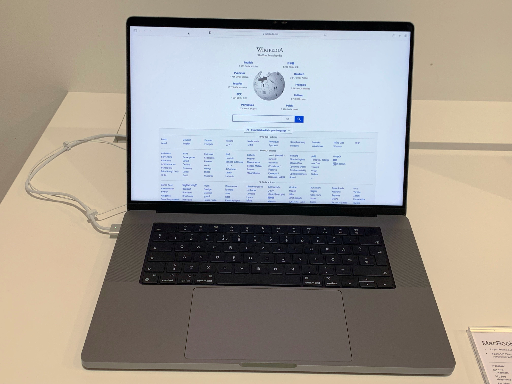
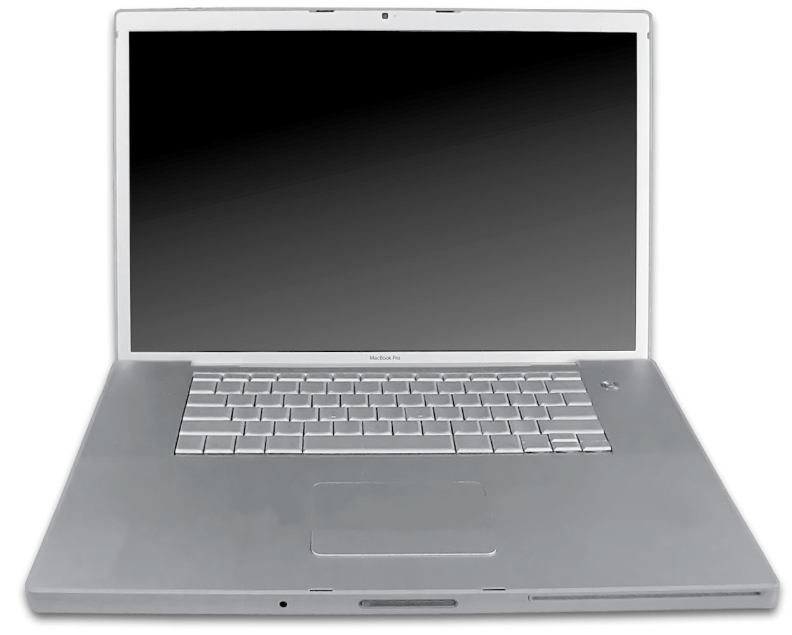
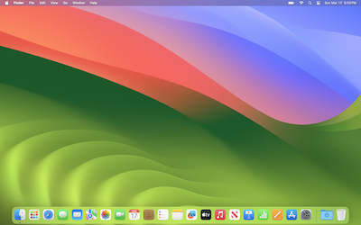

🎥 Explanatory Media
📖 What is macOS?
macOS is designed specifically for Apple hardware (Macintosh). It is famous for its elegant user interface (Aqua), tight integration with the Apple ecosystem, and high performance for creative professionals.
📜 Version History
| Version | Year | Codename |
|---|---|---|
| Mac OS X 10.0 | 2001 | Cheetah |
| macOS 11 | 2020 | Big Sur (M1 support) |
| macOS 15 | 2024 | Sequoia Latest |
🔗 Related Pages
🖼️ Visual Gallery




🔬 Deep Dive & Research Resources
To elevate your understanding of Macos to an academic and engineering level, explore the curated resources below. These materials cover the fundamental physics, architectural evolution, and advanced implementation details required for independent research.
📚 Academic & Technical Reading
🎥 Video Lecture / Demonstration
🏗️ Architecture
XNU Kernel (Hybrid). Combines the Mach microkernel and components from FreeBSD. Uses the APFS file system and Metal API for graphics acceleration.